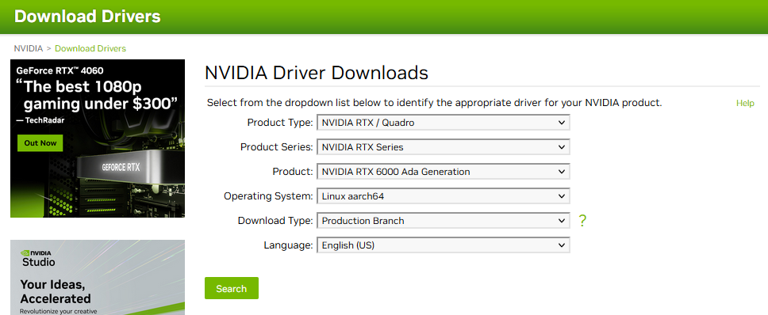
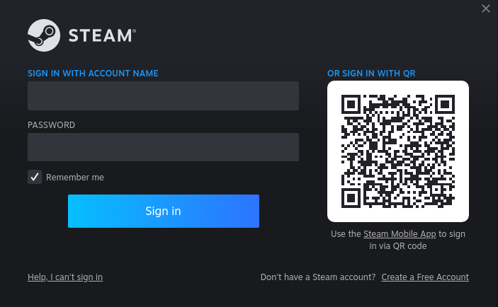
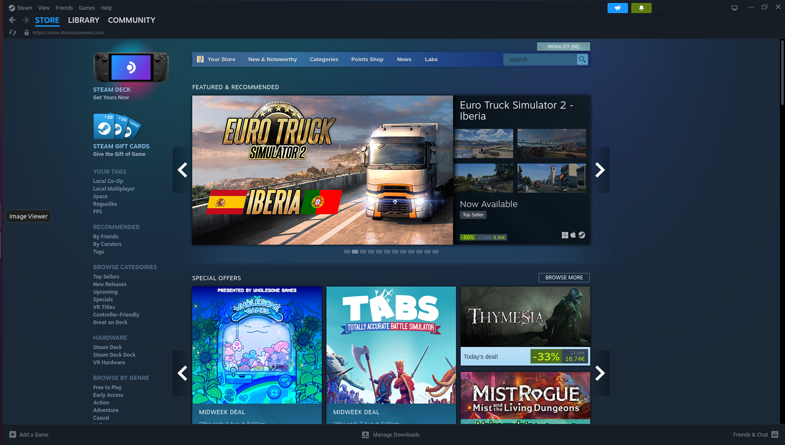
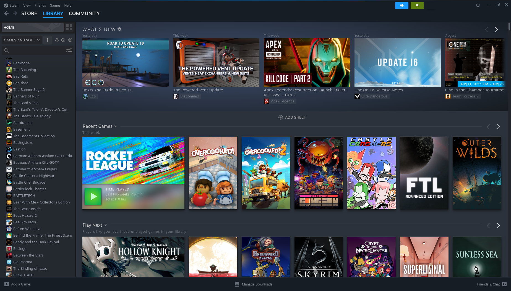

Running Steam on Ampere AltraSteam is a video game digital distribution service and storefront from Valve. It was launched as a software client in September 2003 to provide game updates automatically for Valve’s games, and expanded to distributing third-party titles in 2005.https://en.wikipedia.org/wiki/Steam_(service) The bummer is that the Steam portal that runs on Linux is purely coded for x86/amd64-based system, the same reason why the Steam Deck is based on AMD. So, could it run on arm64 at all?? Yes it can!! In fact, it runs quite smoothly on arm64 when using today’s x86 emulation tools. How to get it up and running is the first step in this journey, and how it can be optimized will be an ongoing story in this document. For the test system, we start with a quite moderate configuration on the Ampere Altra Developer Rugged (AADR): 32-core AADR with 2x16GB DDR4Available for purchase here: https://www.ipi.wiki/products/ampere-altra-developer-rugged Nvidia RTX 6000 Also check out the list of AVL cards for AADR here:https://connect-admin.amperecomputing.com/api/secure-file-download/download-regular/?file=Altra_Family_AVL_January_2023_b29efeedaf.pdf The following software installation includes: 1. Setting up your desktop on a licensed Ubuntu Server 20.04, which comes with the AADR 2. Manually installing Nvidia arm drivers 3. Properly installing the required x86 and amd64 emulation layers 4. Installing Steam Info under preparation: A list of programs that have been tested under the non-wine install: “ working / not working” Proton and other optimization ? Setting up the Desktop on Ubuntu Server 20.04AADR comes installed with Ubuntu Server 20.04. There is currently no off-the-shelf desktop version of Ubuntu 20.04. Though the 22.04 server environment is also workable, we did find that installing the desktop there leads to problems, so please stick to 20.04 for Steam at this time. If you need to reinstall Ubuntu Server 20.04, you can find it here: https://cdimage.ubuntu.com/releases/20.04/release/ So your starting point for below instructions should be a clean Ubuntu Server 20.04.5 (64-bit ARMv8/Arch64) 1. Boot up and run the following commands $ sudo apt update$ sudo apt upgrade 2. Next step is installing the standard ubuntu desktop environment, we use tasksel for this. Some background about tasksel can be found at https://wiki.debian.org/tasksel and specific Ubuntu background can be found at https://linuxconfig.org/ubuntu-20-04-gui-installation $ sudo apt install tasksel$ sudo tasksel install ubuntu-desktop$ sudo systemctl set-default graphical.target$ sudo reboot When the system gets back up you should see your familiar Desktop environment. Installing the Nvidia driverForget about using the the standard Ubuntu utility “Software & Updates” for this, since Ubuntu Desktop is not part of the official distribution for arm64, there are no arm64 drivers being distributed. You will have to find the driver on the Nvidia homepage and install it manually under Ubuntu desktop. 1. Navigate to: https://www.nvidia.com/download/index.aspx And select the driver here :  2. Copy the file to your home directory on the AADR system. Make sure the file is executable, if not, make it executable with sudo chmod +x NVIDIA-Linux-aarch64-xxx.xx.xx.run 3. Next thing to do is to blacklist the open source nouveau driver that is automatically loaded, which would prohibit us from installing the Nvidia propriety driver. Create and edit a file called blacklist-nouveau.conf as follows $ sudo touch /etc/modprobe.d/blacklist-nouveau.conf$ sudo nano /etc/modprobe.d/blacklist-nouveau.conf 4. Add the following lines to the file: blacklist nouveau options nouveau modeset=0 5. Save the file and then: $ sudo update-initramfs -u You will get a warning message similar to this: W: Possible missing firmware /lib/firmware/ast_dp501_fw.bin for module ast 6. Ignore this and reboot $ sudo reboot You now log into a desktop that has no driver loaded for your Nvidia card. 7. Before installing the driver, you shall get the required libraries and tools by running: $ sudo apt-get install g++ freeglut3-dev build-essential libx11-dev libxmu-dev libxi-dev libglu1-mesa-dev libfreeimage-dev libglfw3-dev 8. Then, run the installer $ sudo ./NVIDIA-Linux-aarch64-535.54.03.run This is a menu-driven install, make sure you select to have Nvidia as your default desktop configuration. (Warning: do not do above steps remotely through ssh because your local desktop environment settings will not be updated) $ sudo reboot Et voila! You’re done installing the driver Installing Box86 and Box64 Emulation Box86 is an emulator for x86 userspace tools on ARM Linux systems, allowing such systems to execute video games and other programs that have been compiled for x86 Linux systems. Box86 is an alternative to QEMU for user-mode emulation. Box86 also provides dynamic recompilation as well as functionality to intercept dynamic library calls and forward them to equivalent native libraries, allowing applications to run much faster than if they were fully emulated. https://en.wikipedia.org/wiki/Box86 Very detailed instructions can be found on the GitHub site of the developer at https://github.com/ptitSeb/box86 Box86 is an amazing achievement and though the focus of this is for box86 and box64, which are primarily used for gaming, it might have many more application down the road. Emulation is already a major component of major operating systems like Windows 11 and OSX and is now also coming to Linux. Box86 homepage : https://box86.org/ Keep it SimpleTo keep it simple, we choose to install the online debs because there are too many dependencies to fulfill to compile box86 manually, which could vary depending on the armhf architecture.Instructions online are not always straight forward and most of the experience thus far has been gained by using very low performance products such as Raspberry Pi. To be able to do that we first have to enable armhf on Ubuntu.sudo dpkg --add-architecture armhfThe script itself will use the ar command that is not standard included in our Ubuntu install.The command is part of binutils that can be installed like thissudo apt install binutils Box86We use @Itai-Nelken‘s apt repository to install precompiled box86 debs, which are updated weekly.Note below that we will be installing box86:armhf, not box86 To be able to do that we first have to enable armhf on Ubuntu. sudo dpkg --add-architecture armhf than we can install box86:armhf sudo wget https://itai-nelken.github.io/weekly-box86-debs/debian/box86.list -O /etc/apt/sources.list.d/box86.listwget -qO- https://itai-nelken.github.io/weekly-box86-debs/debian/KEY.gpg | sudo gpg --dearmor -o /etc/apt/trusted.gpg.d/box86-debs-archive-keyring.gpgsudo apt update && sudo apt install box86:armhf -y Box64We use @ryanfortner‘s apt repository to install precompiled box64 debs, which are updated every 24 hours. $ sudo wget https://ryanfortner.github.io/box64-debs/box64.list -O /etc/apt/sources.list.d/box64.list$ wget -qO- https://ryanfortner.github.io/box64-debs/KEY.gpg | sudo gpg --dearmor -o /etc/apt/trusted.gpg.d/box64-debs-archive-keyring.gpg$ sudo apt update && sudo apt install box64-generic-arm -y$ sudo systemctl restart systemd-binfmt Installing SteamAlthough we choose not to compile box86 and box64 but install them straight from the two archives, we will still need to clone the source of box86 to get hold of the Steam install script. $ git clone https://github.com/ptitSeb/box86$ cd box86 The script itself will use the ar command that is not standard included in our Ubuntu install.The command is part of binutils that can be installed like this $ sudo apt install binutils than run the script $ ./install_steam.sh This simple script will download and install Steam in your home folder, and then create a shortcut to steam in /usr/local/bin (for this, it will ask for sudo permission). Simply use steam to launch once it’s installed. Note that the installation, being in the Home folder, will only work for a single user. Don’t use this script if you need a multi-user installation. Original instructions can be found at https://ptitseb.github.io/box86/ After the script had run its course, open a new terminal window and type: $ steam Then after about 20 seconds, the Steam login screen appears!  and with all of its games   Next time, we will be testing what games can actually run on this platform.